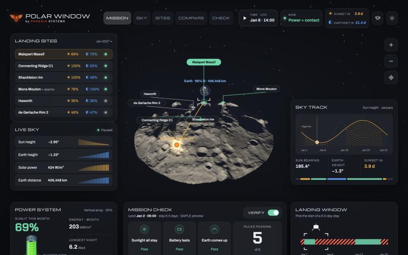
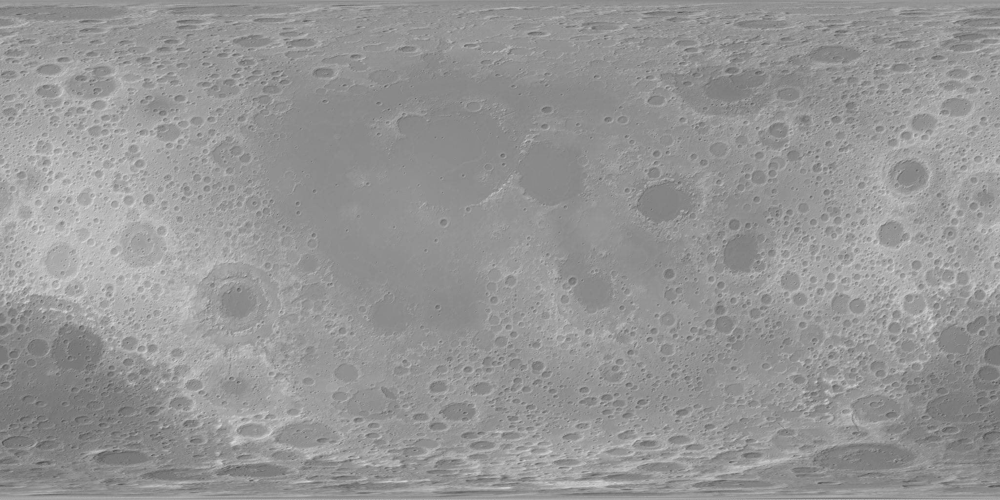
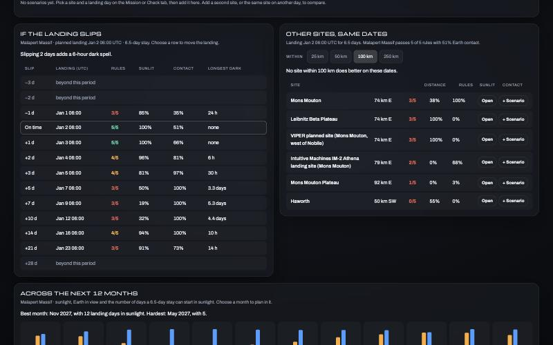
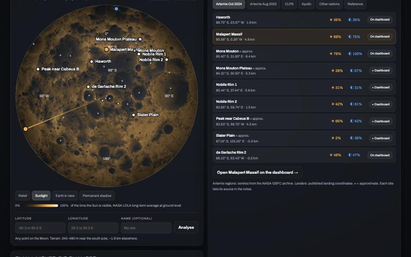

The Sun and Earth against each site’s real terrain horizon, from NASA data.
by PHOENIX SYSTEMS

The problem
At the south pole, light and contact come and go
The Sun skims the horizon, nights last days, and Earth slips behind ridges. Today’s tools can answer each question, but comparing sites and dates means many interfaces and raw tables.
1.54°
Tilt of the Moon’s axis, against 23.4° for Earth: the polar Sun never climbs high
29.5 d
One lunar day: the Sun takes a month to circle the sky
6.2 d
Longest dark spell at Malapert Massif in January 2027
Polar Window · Phoenix Systems
Pick a site
Any site on the Moon, against its real skyline

54 sites: Artemis regions, CLPS, Apollo, other nations
Or type any latitude and longitude
NASA LOLA terrain: 240 m at the pole, 1.9 km elsewhere
Countdowns to sunset and Earthset
Polar Window · Phoenix Systems
Power and contact
Malapert Massif, January 2027, at a glance
Sunlit
69%
Earth in view
75%
Longest night
6.2 d
Rules passing, landing Jan 2
5 of 5
Solar elevation and power, the battery through each dark spell, Earth contact hours, and five mission rules. Each stay is checked three ways: a direct hour-by-hour calculation, a prediction by our AI, and formal verification with SAPLE.
Polar Window · Phoenix Systems
When plans change
The launch slipped. Now what?
“Slipping 2 days adds a 6-hour dark spell.”
Every slip from −3 to +28 days, re-checked
Other sites within 25–250 km, same dates
The next 12 months at a glance

Polar Window · Phoenix Systems
Why small moves matter
Four kilometres can change everything

Moving 4.3 km west of the Malapert Massif point:
44% → 58%
average sunlight
71% → 99%
Earth in view
Source: NASA LRO LOLA long-term average illumination (Mazarico et al.), ground level, 240 m pixels
Trust and reach
Built on NASA data, checked three ways
0.002°
Sun and Earth positions: worst difference from NASA JPL Horizons, over 216 checks
99.8%
Artificial intelligence: our LSTM neural network gets all five mission rules right for 99.8% of stays at sites it never saw
1,350
Missions verified with SAPLE, our formal-verification engine: every one matched the direct calculation
All terrain, illumination and imagery are NASA open data. Learn mode for classrooms. Runs in any browser, no install. Code: github.com/smander/nasa_phoenix_systems_2026
Polar Window · by PHOENIX SYSTEMS · Oleksandr Mostovyi